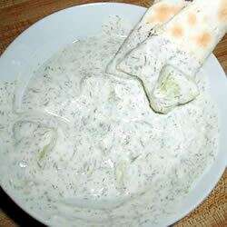

This cool and healthy dip can be served along side rice and meat, or simply with bread. No Persian meal is complete without Maast-o khiar! This dish is best if refrigerated for a few hours, but if you are strapped for time feel free to serve after mixing. Don't be afraid to get creative! Try adding spinach, raisins, or walnuts. Other herbs could be used as well (i.e. mint, tarragon, oregano). More cucumbers, less shallots...it's your call! Enjoy!
